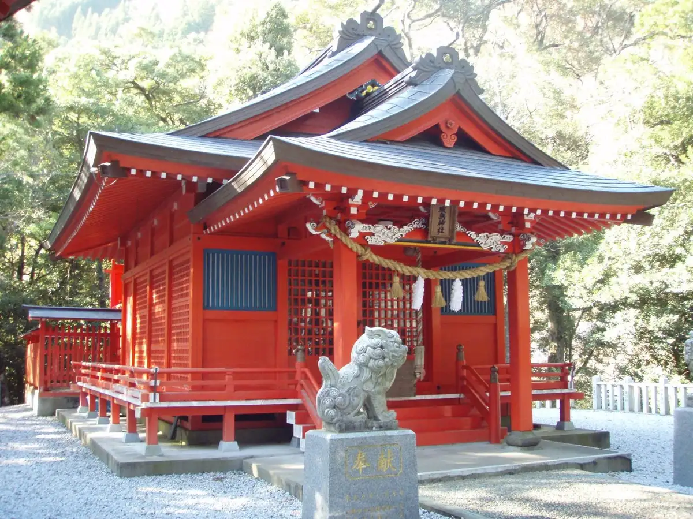
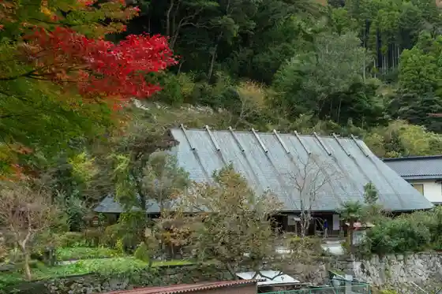
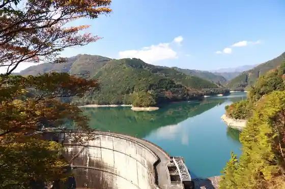
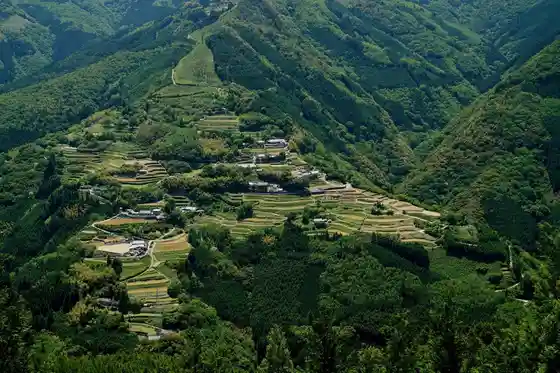
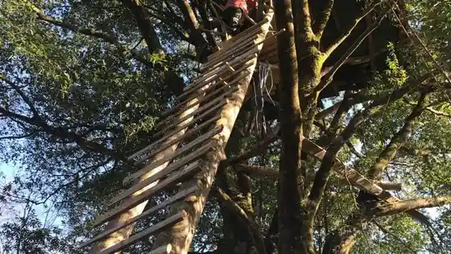

Japan / Miyazaki / Shiiba
Shiiba
Shiiba · Miyazaki
Shiiba
Highlighted on the Miyazaki map.

Sights
Tsurutomi Residence
Shiiba, Miyazaki · 0982-67-3139 · Official / source link

Ue Shiiba Dam (Hyuga Shiiba Mizumi)
Shiiba, Miyazaki · 0982-67-3139 · Official / source link

Sennin no Tanada (Oi Cho Lookout)
Shiiba, Miyazaki · 0982-67-3139 · Official / source link

Tsuriihausu Forest
Shiiba, Miyazaki · 0982-67-3139 · Official / source link

Ju Negawa Shuraku (Hachi Village Sugi)
Shiiba, Miyazaki · 0982-67-3139 · Official / source link
Hietsuki no Sato Campground (BASE CAMP shiiba)
Shiiba, Miyazaki · 0982-67-2722 · Official / source link
Shiiba Minzoku Geino Museum
Shiiba, Miyazaki · 0982-68-7033 · Official / source link
Shiiba Itsukushima Shrine
Shiiba, Miyazaki · 0982-67-3139 · Official / source link
Shiiba Sogo Sports Park (Gym)
Shiiba, Miyazaki · 0982-67-2850 · Official / source link
Shiiba Dohyo Sumoba
Shiiba, Miyazaki · 0982-67-3203 · Official / source link